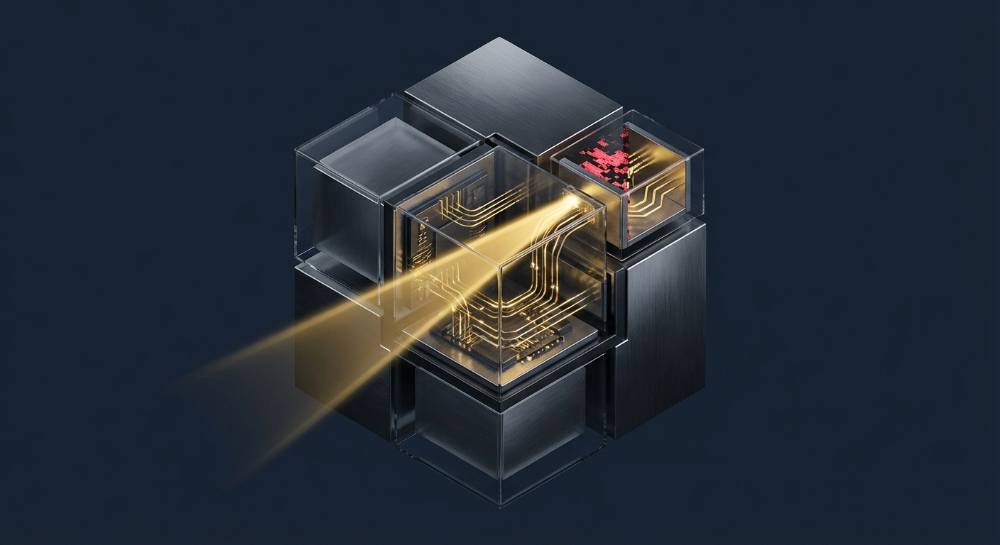
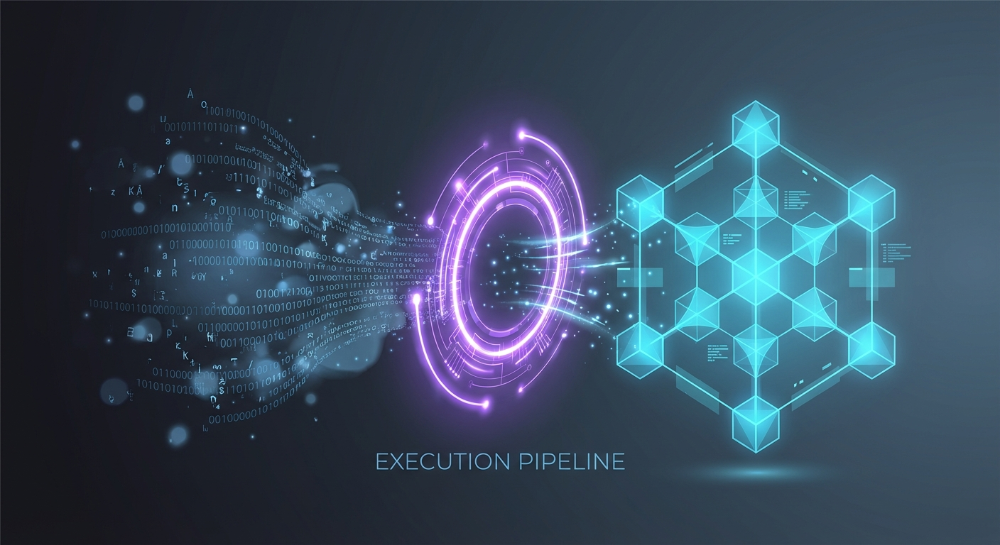

Finite State Machine Modeler
Transform abstract concepts into deterministic logic. Analyze systems, map state transitions, validate properties, and generate test scenarios with AI-driven formal methods.
Core Capabilities
From concept to formal validation in seconds.

State Identification
Automatically extracts all possible states (Initial, Normal, Error, Terminal) from a natural language concept description.
Transition Mapping
Maps events and triggers to state changes, identifying guard conditions and resulting actions.
Visual Diagrams
Generates Mermaid.js compatible code to visualize the state machine structure instantly.
Edge Case Detection
Identifies invalid transitions, race conditions, and missing error handling paths.
Property Validation
Validates formal properties including determinism, completeness, reachability, and liveness.
Test Generation
Creates comprehensive test scenarios covering happy paths, error paths, and boundary conditions.
Interactive Simulator
Configure the FSM parameters and visualize the generated logic.
Configuration
Run simulation to generate State Diagram
// Analysis results will appear here...Execution Pipeline
How the FSM Task processes your request.

State ID
LLM analyzes concept to identify all potential states.
Transition Map
Events are mapped to state changes with guard conditions.
Validation
Check for determinism, reachability, and deadlocks.
Output
Generate diagrams, reports, and test cases.
When to Use
System Design
Architecting complex software behaviors and ensuring logic completeness before coding.
Protocol Analysis
Verifying communication protocols and handshake sequences.
Missing Requirements
Identifying gaps in business logic by finding unhandled states.
QA Automation
Generating exhaustive test cases for state-dependent logic.